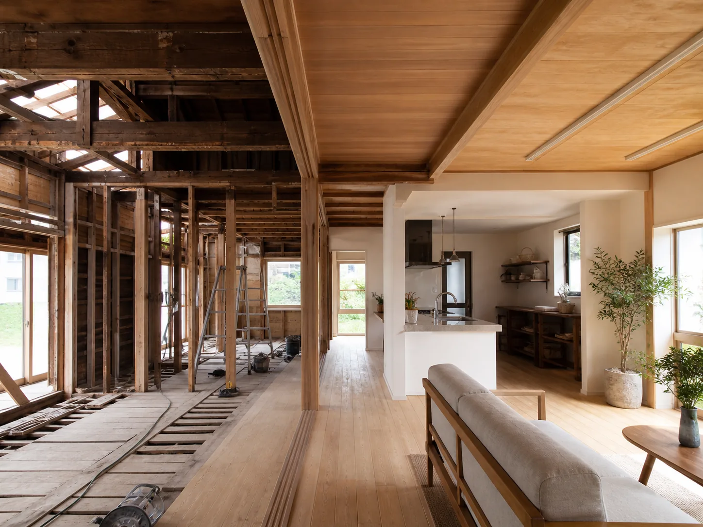
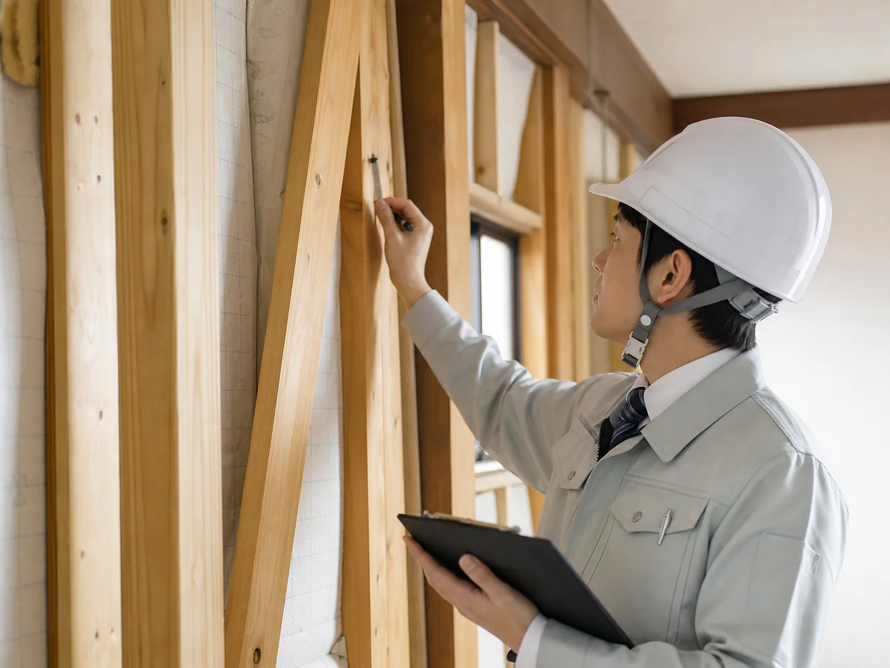

SERVICE 02
リフォーム・リノベーション
水まわりの部分改修から全面リノベーションまで、暮らしに合わせて再生します。

OVERVIEW
既存の魅力を活かしながら、暮らしをアップデート
築年数の経った住まいでも、梁や建具など既存の魅力を活かしながら性能と快適性を引き上げるのがつむぎ工務店の得意分野。耐震診断・断熱改修にも対応し、安心して長く住み続けられる住まいへ再生します。

部分改修〜フルリフォーム
水まわりだけの改修から、スケルトンリフォームまで幅広く対応します。

耐震・断熱診断
現行基準に基づく耐震診断・省エネ診断を行い、安心の住まいへ改修します。
仮住まいサポート
工事期間中の仮住まい手配など、暮らしを止めないサポートも承ります。
SCOPE
対応内容
- 水まわり(キッチン・浴室・洗面・トイレ)改修
- 間取り変更・スケルトンリフォーム
- 耐震補強工事
- 断熱改修・窓リフォーム
- 二世帯化リノベーション
- 外壁・屋根の改修
PRICE
料金目安
水まわり部分改修
キッチン+浴室など
150万円〜
間取り変更リフォーム
1〜2部屋規模
400万円〜
フルリノベーション
耐震・断熱含む全面改修
1,200万円〜
※金額はあくまで目安です(デモ表示)。現地調査の上、詳細なお見積りをご提示します。
CASE